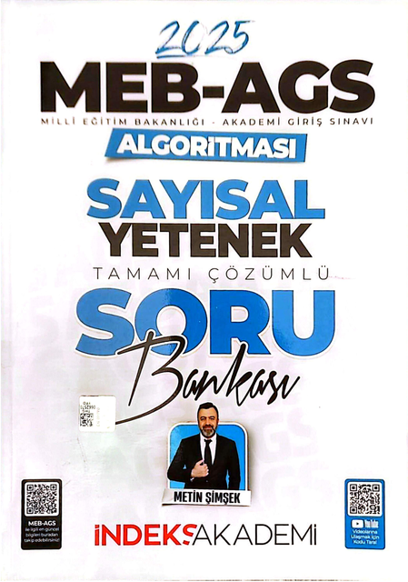

Çalışma Günlüğüm
27 Kasım, Cuma
BUGÜNKÜ ÇALIŞMA
124
Soru
28
Sayfa
2
Deneme
95 doğru20 yanlış9 boş
＋ Soru girişi
＋ Deneme girişi
Alanların
AGS17 kaynak · Sayfa %31 · Deneme %20›
EĞİTİM16 kaynak · Sayfa %18 · Deneme %10›
ÖABT20 kaynak · Sayfa %25 · Deneme %15›
Çalışma takvimi
‹ Kasım 2026 ›Pzt
Sal
Çar
Per
Cum
Cmt
Paz
139
268
397
4
5155
614
743
8
9101
10130
11159
1218
1347
1476
15105
16
17163
1822
1951
20
21109
22138
23167
2426
2555
2684
27124
28
29
30
Son çalışılan

Algoritması Sayısal Yetenek Soru Bankası
İndeks Akademi · Matematik80/181 sayfa%44